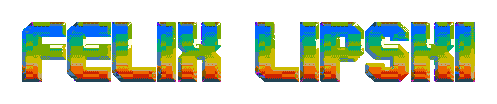
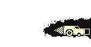
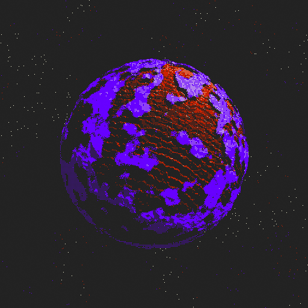
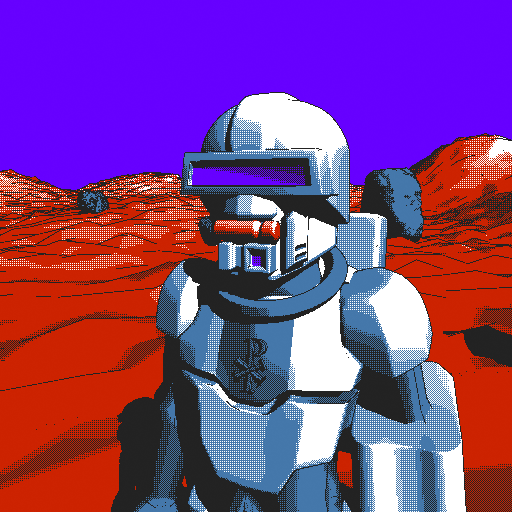
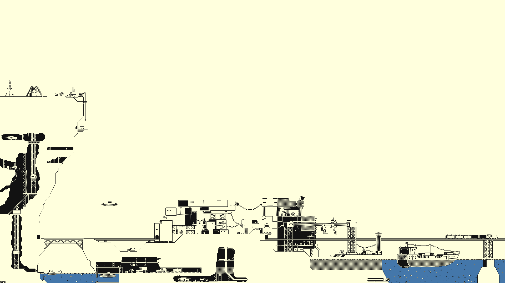

Intro
My name is Felix Lipski. I do computer programming and various "art" endevors, like games and music. I live and work in Poland.
I work on SPACELIX OPERA and ServitorAI and Dither Studio 3000
Links
Professional programming
I specialize in Full-stack development and functional programming. I learn very quickly and I'm always looking to expand into other areas. I'm always open to hear about new job opportunities, but especially those, which involve technologies I don't yet know.
Languages experienced:
- TypeScript - 4 years exp.
- Haskell - 2 years exp.
- Scala - 1 years exp.
Some of the technologies I've used: React, React Native, PostgreSQL, Docker, Svelte, Linux, git, Nix, ZIO
Passion programming
In my free time I develop games and work on a music generation algorithm.
Recently, these two have been merged into one project, called Spacelix Opera
Here's a link to the SPACELIX OPERA
Languages I have known and loved:
- GDScript
- LISP
- Bash
- Python
- Ocaml
- Prolog
- Haskell
- Nix
- C
- C++
- Nim
- Zig
- Futhark

Music
Sounds I like and employ:
- baroque eclecticism - mixing woodwinds and strings with non-classical genres
- anything that reminiscent of "game music" - Trackers, soundfonts, etc.
- anything related to magnetic tapes
- "cheap" and broken sounds of toy instruments
I play the guitar, piano and clarinet. Arguably, I also sing.
Visual Arts
I draw pixel art and am fairly fluent in Blender and POVRay.


I like retrofuturism and extensive use of dithering and palette limiting.
Personal & Misc.
I run, bike and sauna a lot. I run whenever normal people would walk.
I like all things industrial. Ruhr Valley is my favourite place on Earth.
I think creation is the highest virtue in life. Here's an interesting article on the matter.
My other interests include: history, philosophy, religion
Cool websites I enjoy
- Not Related - podcast about history, philosophy and science. focus on very unknown subjects and theories
- Existential Type - functional programming and computer science knowledge
- Bartosz Milewski - functional programming and computer science knowledge
- Behind the name - meanings of names
- Linas Vepstas - cool graphs
- First Millenium Revisionist - tldr. the Roman Empire is fake
- Wiby - search engine for minimalist and retro websites (not unlike this one :D)
- Neocities.org - create your own website for free! Make the internet a cooler place! (It's actually easy and very fun!)
